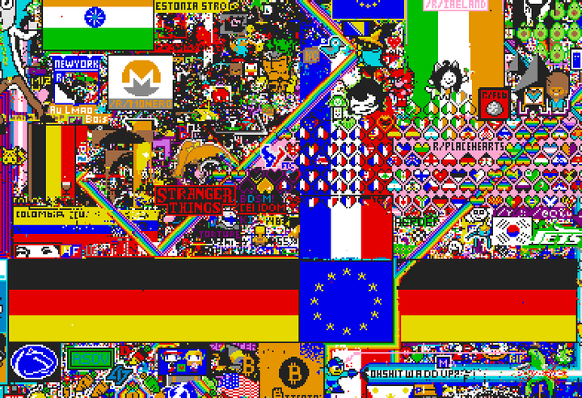
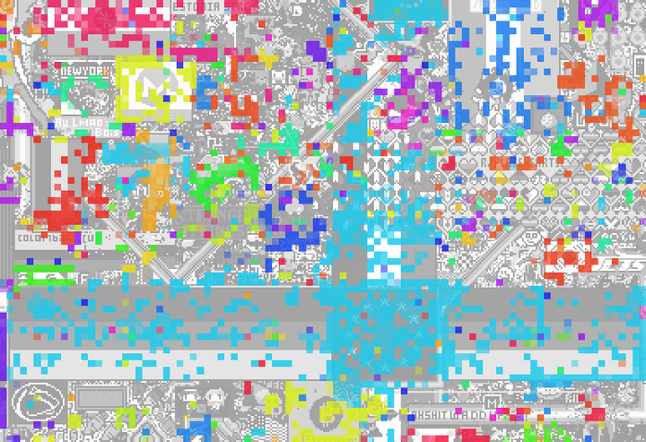
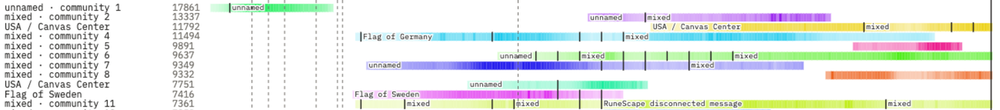
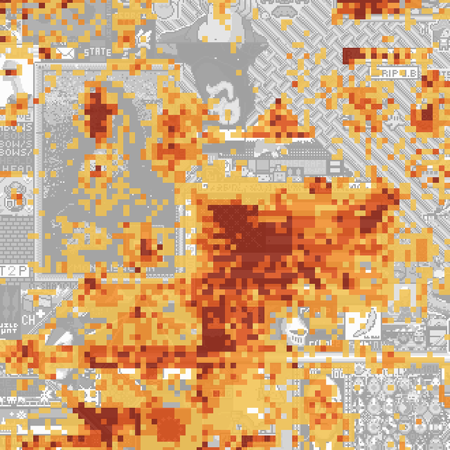

About the community viewer
How the communities on the canvas are found, followed, fused and named, what every control does, and how far to trust what you see.
What you are looking at
The page replays r/place 2017, the 72-hour Reddit event from 31 March to 3 April 2017 where anyone could colour one pixel of a shared 1000 × 1000 canvas, then had to wait before placing another. Underneath is the real canvas, rebuilt from the placement log every 15 minutes. Over it, each small patch of the canvas is coloured by the community of accounts that was painting it at that moment.
A community here is not something anyone declared. It is a set of accounts that kept placing the same colours in the same places at the same times, found from the log alone. The timeline under the canvas follows the largest of them from birth to end.
The data
- Reddit's public release of the 2017 placement log: 16,567,567 placements by 1,166,940 accounts, each with a time, a position and one of 16 colours. Account ids are hashes; nothing here identifies a person.
- 287 frames, one every 15 minutes, from launch (31 March 2017, 17:00 UTC) to the close.
- The 2017 /r/place Atlas, a community-made map of the final canvas with an outline and a name per artwork, is used only to put names on communities and as a check. It never decides how communities are found or fused.
How it is made
- Link accounts that edit together. The canvas is cut into square cells (1, 5, 10 or 15 px on a side) and time into slots (5, 15, 30 or 60 minutes). Two accounts are linked when they placed the same colour in the same cell in the same slot. A slot with k accounts gives each pair in it weight 1/(k−1), so a crowded slot counts no more in total than a quiet one. In slots with more than 50 accounts, each account is linked to 50 others drawn at random, with the weight scaled up so the expected total is unchanged. This is the co-editing network.
Accounts A, B and C placed blue in the same cell and slot, so each pair is linked; D placed red and is not. Weights are 1/(k−1), so an account in a crowded slot (right) gets the same total weight, 1, as one in a quiet slot. Why the same colour? Two accounts placing different colours in one cell at one time could be a crew painting a flag in several colours, a fight, or just neighbours. We measured on the log what linking them would add. On a single pixel, most of it (57 to 74%, depending on the slot) is one account painting over the other’s colour, so leaving colour out would join attackers to the people repairing after them. With cells of 5 px or more, painting over is a smaller part (3 to 26%); most of what would be added is pairs that placed different colours on different pixels of the cell. At 5 px and 15 minutes we checked whether those pairs are crewmates: they also share a colour elsewhere in the same 2-hour windows in 6.0% of cases, close to pairs where one painted over the other (3.5%) and far from pairs that shared a colour (17.7%). So at every setting, linking different colours would add mostly fights or strangers, not crews. Crews that paint in several colours are still linked, through members who place more than one colour and through cells where they share one, as the German flag below shows.
What linking different colours would add, measured on the whole log. Painting over is counted pixel by pixel, so an attacker and a defender on two different pixels of one cell are not counted as painting over: the left panel is a floor on fights, not their full size. - Find communities at each frame. For each frame, the network is built from the 2 hours of placements before it, and the Leiden algorithm splits it into communities by maximising modularity at resolution 1 (the standard setting, chosen before running, not tuned).
Leiden splits the network where links inside groups are much denser than between them. Each frame (every 15 minutes) uses the 2 hours of placements before it, so neighbouring frames share most of their data. - Follow communities from frame to frame. A community continues one from the frame before when their members overlap enough: the shared accounts are at least 30% of the two together (Jaccard similarity), best matches first. Otherwise it starts a new row on the timeline. A row keeps its colour for its whole life. One artwork can hold several rows, for example when a crew changes overnight or two crews work side by side.
Matching one frame's community to the next by the accounts they share (filled). Best matches are taken first, and each community continues at most one from the frame before. - Colour the canvas. The overlay works on 4 × 4 px cells. Each cell takes the colour of the row whose members made most of its placements in the 30 minutes before the frame, and its opacity is that row's share of them. Placements by accounts in no community, or in rows that never reached 10 accounts, are left uncoloured.
The cell goes to the community with most of its recent placements; how solid the colour is says how much of the cell's activity that community had. 

A real frame, 2 April 09:15 UTC (hour 40), 5 px cells and 15-minute slots. Left: the canvas. Right: the communities over it in grey. One community (light blue) made most of the recent placements across both halves of the German flag, the EU flag between them and part of the French flag above, while the small artworks around them belong to many small communities. - Fuse rows into groups (the fused setting). Two rows become one group when one starts within the chosen gap of the other ending, and either their regular members (accounts in a row for at least two frames) or their cells (the 4 × 4 cells where each was the majority in some frame) overlap enough. Overlap is the Jaccard similarity, shared items as a share of both together, never as a share of the smaller row: with the smaller-row share, every small row inside a giant one fuses with it and everything chains into one group (in a 60-frame test, 2,407 of 2,533 rows ended up in one group). Fusing is transitive: if A fuses with B and B with C, all three are one group.
Top: two rows fuse when they are close in time and share enough regular members (or cells). Bottom: measured as a share of the smaller row, every small row inside a giant one would fuse with it. - Name groups, stretch by stretch. The Atlas shows only the final canvas, so a group is named every 2 hours from the cells it held then. A cell counts towards an artwork only if, at that time, at least 12 of its 16 pixels already had their final colour, and only towards the smallest Atlas outline it lies in (large outlines such as "USA / Canvas Center" or "European Union" sit over the artworks inside them). A stretch is unnamed when under a fifth of what the group held survives to the end, as with the Void, whose black was painted over. It takes an artwork's name when that artwork has at least half of the surviving cells, "A / B" when two share it, and mixed otherwise.
Names are given per 2-hour stretch, from the cells the group held then that already look like the final canvas. 
The real timeline (5 px, 15 min, fused). Each row is a group, darker where it had more accounts; small ticks mark where its name changes, for example from "unnamed" to "mixed", while "Flag of Germany" and "Flag of Sweden" hold their names for most of their lives. Dashed lines are cooldown changes. - Contested ground. For each cell, the number of groups that held it (were its majority row) for at least the chosen time in total, up to the frame shown.

The centre at the close, counting a group if it held a cell for at least 2 hours: 2 groups 3 4 5 or more. The darkest patch is the middle of the canvas, held in turn by the Void, the purple corner and the USA flag. - Split tracks (the split when they move setting). Following members alone lets a row drift from one artwork to another over a day (the Germany row slides into France and the European Union; the First Void row turns into Mona Lisa). A row is cut where less than 30% of the cells it held in its first 2 hours are among those it held in the last 2 hours; the new piece then measures from its own first 2 hours. A row that only grows is never cut. Cut pieces are fused by cells only, since a piece has the same members as the one before it. Both views are kept; neither replaces the other.
The dashed outline is what the row held in its first 2 hours; the solid area is what it holds in the last 2 hours. A row is cut only when it has left where it started. - Mostly inside. When you point at a group, the page says if one of its rows sits mostly inside a row of another group: at least half of its regular members are in that row, which is at least three times its size. This is shown, never used to fuse.
"Mostly inside" points out a small group that is largely part of a bigger one, without changing the groups.
The 16 settings, and which to trust
The cell size and slot length are the two choices in step 1, and all 16 combinations were computed. To learn which ones work, the same method was run on synthetic canvases with groups planted in them, where the right answer is known.
| Cell size | 5 min | 15 min | 30 min | 60 min |
|---|---|---|---|---|
| 1 px | fails | fails | fails | recovers |
| 5 px | recovers | recovers | recovers | recovers |
| 10 px | recovers | recovers | recovers | recovers |
| 15 px | recovers | recovers | recovers | recovers |
Settings that fail are still shown, with a warning under the setting buttons, so you can see what a failing setting looks like. The page opens on 5 px and 15 minutes.
The controls
- Time slider, Play
- Moves through the 287 frames; 2×, 6× and 15× set the playback speed. The clock shows the time in UTC and the hours since launch.
- Cell size, Time slot
- Which of the 16 settings to show (step 1).
- Community colour
- How strongly the overlay covers the canvas.
- Layer
- communities colours each cell by its row or group; contested ground colours it by how many groups held it so far, counting a group only if it held the cell for at least 1, 2 or 4 hours in total.
- Canvas underneath
- The real canvas in grey, in its own colours, or hidden.
- Fuse communities
- separate shows every row on its own; fused joins rows into groups (step 5).
- Tracks
- as followed keeps rows as they were followed by members; split when they move cuts rows that drift (step 8).
- Fusing sliders
- Members in common at least, cells in common at least (both Jaccard similarity, step 5), and the longest gap allowed between one row ending and the other starting, up to 4 hours. Defaults: 30%, 30%, 2 hours.
- Pointing at the canvas
- Shows the row or group in charge of that cell, its name at that time, and for contested ground who held the cell and when.
- Timeline
- The 30 largest rows or groups by peak size. Darker means more accounts at that time; small text marks where a name changes; dashed lines mark the moments Reddit changed the wait between placements. Click a row to pick out that community on the canvas.
Glossary
- placement
- One account colouring one pixel at one moment; the log is a list of them.
- cooldown
- The wait Reddit imposed between one account's placements, 5 to 20 minutes, changed several times during the event.
- frame
- The canvas at one moment; here, every 15 minutes.
- cell
- A square block of pixels. Step 1 uses cells of 1 to 15 px to link accounts; the overlay always uses 4 × 4 px cells.
- time slot
- A block of time (5 to 60 minutes) within which two placements count as at the same time.
- co-editing network
- Accounts linked when they placed the same colour in the same cell within the same time slot.
- painting over
- A placement that changes a pixel away from a colour another account had put there. Repainting the colour already shown, or the blank canvas, does not count. Not always hostile: a crew tidying its own stray pixels does it too.
- community
- A set of accounts with more co-editing links among themselves than a chance model predicts.
- modularity
- How much denser the links inside communities are than in a chance model that keeps each account's total link weight. High values can come from geography alone (people near each other link more), so it is never read on its own.
- Leiden algorithm
- A standard method that splits a network into communities by maximising modularity, with a guarantee that each community is connected.
- resolution
- A dial on modularity: higher gives more, smaller communities. Fixed at 1 here.
- Jaccard similarity
- For two sets, the items they share divided by the items in either. 1 means identical, 0 means nothing in common.
- row
- A community followed through time while enough of its members carry over; one line on the timeline.
- regular member
- An account in a row for at least two frames (for a row that lived one frame, all its accounts).
- group
- Rows fused together by shared regular members or shared cells.
- dominance
- The share of a cell's recent placements made by its majority row; drawn as opacity.
- held
- A group holds a cell in a frame when it is that cell's majority row.
- contested ground
- Cells held, at different times, by several groups.
- the Atlas
- A community-made map of the final 2017 canvas, one outline and name per artwork; used here only for names and checks.
- the Void
- A group whose goal was to cover the canvas in black; it ate into artworks at the centre and was painted over, so little of it survives on the final canvas the Atlas maps.
- synthetic canvas
- A simulated event with groups planted in it, so the right answer is known and a method can be checked against it.
- habit null
- Simulated independent accounts, each with a real account's own times, place, spread and colours, and no groups: what co-editing looks like when nobody coordinates.
What it does not show
- Not tested against chance here. Accounts that paint the same place at the same times link even with no coordination at all. These communities are not compared with the habit null on this page, so a community is a description, not evidence that its members coordinated.
- Not factions. A community is not a declared side. One artwork can hold several communities, and one community can work on several artworks.
- Names lean on the end. The Atlas maps only the final canvas. Artworks that were wiped out before the end cannot be named, and show as unnamed.
- Crowded slots are sampled. Slots with more than 50 accounts are linked by a random sample (step 1), which mostly affects the large cells and long slots.
- Choices on this page are dials, not findings. The fusing thresholds are yours to move; the defaults are starting points, and a group's size depends on them.
Part of r/place 2017 as a complex system. Data: the r/place 2017 placement log released by Reddit. Artwork names: the 2017 /r/place Atlas (Roland Rytz, AGPL-3.0). Back to the viewer.